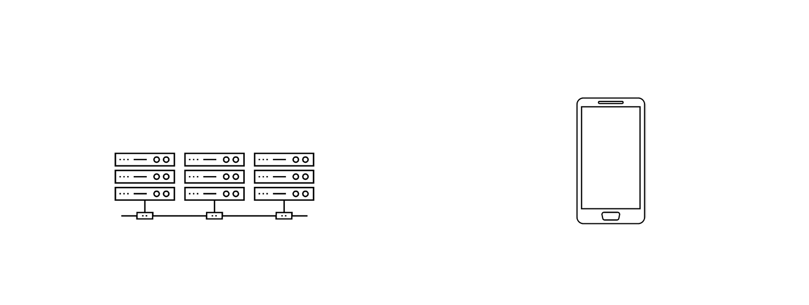
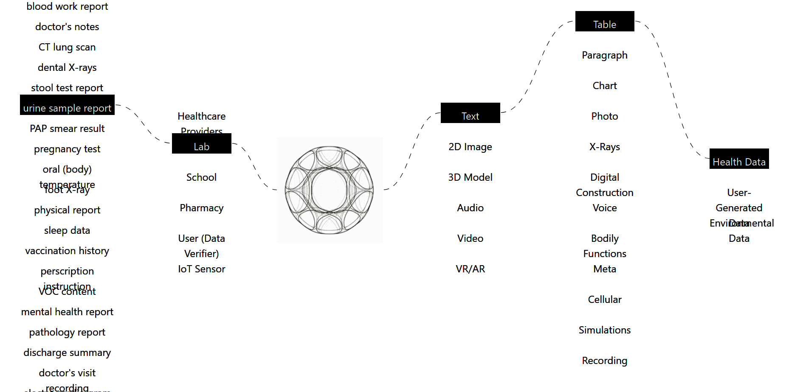

How does OMNI INDI work?

One simple portal supported by a robust data architecture and security.
Data Architecture
To ensure data security, individual health documents are anonymously stored as unstructured data on OMNI INDI servers (a cloud based storage). Only the ledger referencing each piece of data to an individual's identity is secured on the blockchain (cryptographic encryption) to reduce the system's dependency on the blockchain model. Only the user/owner of the data can connect the dots between the data and the user's identity through a biometric identification, utilizing fingerprint or facial recognition.
Data Parsing
Below is an interactive diagram showing how a type of data generated (either clinically or at home) is aggregated, parsed, and stored for for ease of retrieval. Incoming data may range from CT scans, urine sample report, sleep data, to air quality. Those then are parsed based on data formats and later stored within the three main buckets: "clinical", "personal tracking", and "environmental"

How about the Data Marketplace?
As part of the proof-of-concept, we've developed a multi-agent simulation to demonstrate the potential benefit of OMNI INDI. To keep the simulation fairly simple (at this stage),
we've only captured three of the main stakeholders: users, healthcare facilities, and researchers.
The simulation below was run across 1000 users, 10 researchers, and 3 healthcare facilities. 10% of the users were assumed to have rare
disease, 33% to have a chronic illness, and the rest to have no significant health issues.(insert link) Each user condition implies
a certain frequency of doctor visits. The 10 researchers are randomly split into three research fields (medical imaging, pharmcaceutical, public health), hence
research field have unique desire for certain data types. There are three healthcare facilities to represent three different facility scales (small, medium, large).
Each facility is assumed to have a percentage of administrative burden added to the cost for each procedure.
The diagrams below show how the three stakeholders interact with each other in both the current healthcare system and in the new OMNI INDI model.
manage
manage
Simulated Data
The simulation data below were done given the following assumptions:....... Sed commodo sit amet dui in ultricies. Fusce ullamcorper tincidunt tellus, a semper sem fringilla in. Sed convallis laoreet lectus, quis fermentum nisl facilisis at. Sed semper lacinia ligula et feugiat. Vestibulum tincidunt nisl interdum euismod facilisis. Pellentesque posuere, augue vitae egestas aliquet, enim tellus scelerisque metus, vitae sagittis nunc dolor eu libero. Morbi eu posuere lorem. In hac habitasse platea dictumst. Aliquam vestibulum, odio a malesuada tincidunt, nunc tortor dapibus tortor, sed laoreet mauris ante id dolor. Vivamus eget aliquam est, nec porttitor risus. Integer id nibh ante. In consectetur nisl id justo rhoncus, et convallis purus tempor. Phasellus convallis sed tortor
manage
manage
How about for the research community?
Robust, longitudinal health data sets are hard to come by, especially when the reseach is around specific demographics or health conditions. With OMNI INDI, health data includes not just discharge data, but environmental data, family data, and personal device data. This layered collection of quantified data and social data is far richer than the data currently available to researchers from hospital consortiums and can be purchased on the OMNI INDI Marketplace. Individual users of OMNI INDI decide what data they want to sell for personal profit and what data they want to keep private. So when a researcher visits the Exchange, they can query for specific metrics, see the current price of that data query, and directly purchase data, or, they can create incentives to attract additional, or new, users. (see market simulation)

In the News
HBR: Making Better Use of Health Care Data